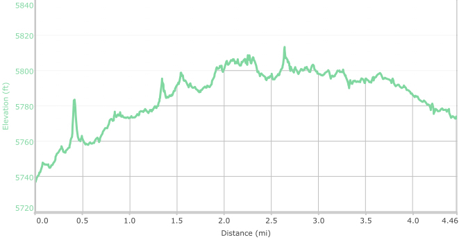
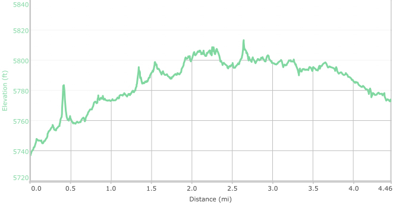

Hike New Mexico
w/ Tom & Ken
Bisti Badlands
| Difficulty | Round-trip | Type | Elev. Chg. | Exposure | Wow Factor | Facilities | Seasons | By Car |
|---|---|---|---|---|---|---|---|---|
| Easy | 4.7 miles | Loop | 200 ft | Full sun | Hoodoos | None | Fall |
 |


 
- Oct 28, 2016: Pointing to the heavens
- Oct 28, 2016: A banded serape over the Senor's shoulders
- Oct 28, 2016: Not only shapes, but colors
- Oct 28, 2016: How did these round rocks get there?
- Oct 28, 2016: Tom gets an overview of the trip ahead from the red hills
- Oct 28, 2016: Hoodoos abound in a myriad of shapes
- Oct 28, 2016: The reds and creams are accentuated by black and gray hills
- Oct 28, 2016: Until you see them, you wonder why they are called cracked eggs
- Oct 28, 2016: Subtle coloring accentuates the field of hoodoos
- Oct 28, 2016: Shapes pop up everywhere along the hike
- Oct 28, 2016: Sharp and round, close and far highlight many views
- Oct 28, 2016: A crisscross of arroyos tells the story of much water-wear
- Oct 28, 2016: Formations line up like soldiers
- https://www.flickr.com/photos/139088815@N08/30648005885/in/album-72157674431643482
- https://www.flickr.com/photos/139088815@N08/30531129602/in/album-72157674431643482
- https://www.flickr.com/photos/139088815@N08/30016463424/in/album-72157674431643482
- https://www.flickr.com/photos/139088815@N08/30014367883/in/album-72157674431643482
- https://www.flickr.com/photos/139088815@N08/30014379233/in/album-72157674431643482
- https://www.flickr.com/photos/139088815@N08/30560190121/in/album-72157674431643482
- https://www.flickr.com/photos/139088815@N08/30531177972/in/album-72157674431643482
- https://www.flickr.com/photos/139088815@N08/30014402523/in/album-72157674431643482
- https://www.flickr.com/photos/139088815@N08/30531187472/in/album-72157674431643482
- https://www.flickr.com/photos/139088815@N08/30014416253/in/album-72157674431643482
- https://www.flickr.com/photos/139088815@N08/30611900596/in/album-72157674431643482
- https://www.flickr.com/photos/139088815@N08/30014429533/in/album-72157674431643482
- https://www.flickr.com/photos/139088815@N08/30648200775/in/album-72157674431643482
The Bisti Badlands is considered to be one of the most scenic areas of
the southwest - rightfully so! Located about 40 miles south of Farmington off 371, access
is provided by dirt road at a well-marked turn-off between mile markers 70 and 71.
The badlands is part of a vast wilderness area, and is loaded with bizarre and twisted
rock sculptures, accentuated by a striking mix of color. Many of the more well-known
features have been assigned interesting names, so it is well to plan in advance to
see these, as the area has no trails and is open in every direction. Oftentimes the features
are quite a distance apart.
Be prepared, as the badlands is fully exposed to the sun, and carrying water, along with
a reliable GPS unit, is advised. The best time to visit is in the fall, when summer's
heat has faded. Winter can be brutal, and spring is often very windy in the southwest.
It is difficult to present images that impart the solitude and vastness of the place,
and photographing the scenes can be a challenge owing to the direct sun. Check out the
photographic work in the references for an excellent and thoughtful presentation of
hoodoo images at the badlands.